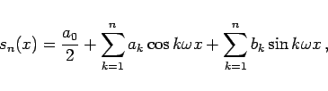
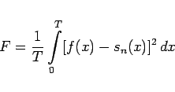

Inhalt Index DeskTop Bronstein

 Unendliche Reihen Fourier-Reihen Trigonometrische Summe und Fourier-Reihe Wichtigste Eigenschaften von Fourier-Reihen
Unendliche Reihen Fourier-Reihen Trigonometrische Summe und Fourier-Reihe Wichtigste Eigenschaften von Fourier-Reihen


Wenn eine Funktion f(x) durch eine trigonometrische Summe
|  | (7.98a) |
auch FOURIER-Summe genannt, angenähert wird, dann ist der mittlere quadratische Fehler mit einer minimalen Fehlerquadratsumme
|  | (7.98b) |
am kleinsten, wenn für ak und bk die FOURIER-Koeffizienten (7.95a,b) der gegebenen Funktion zur Näherung benutzt werden.